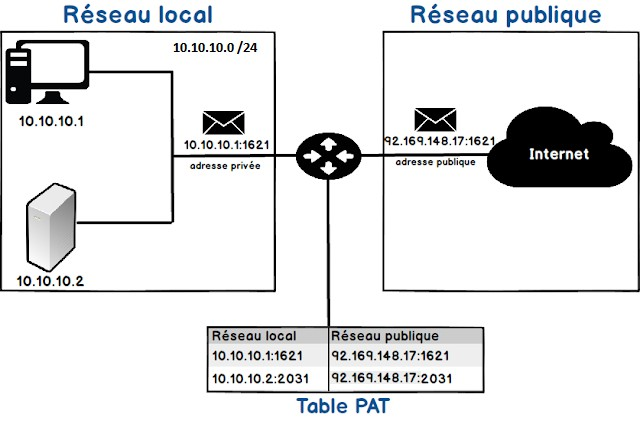
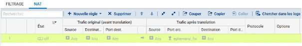
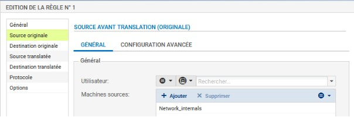
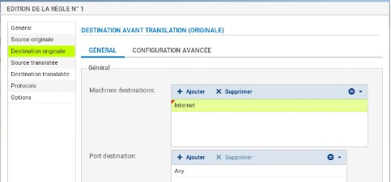
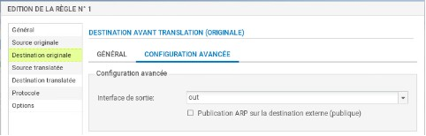
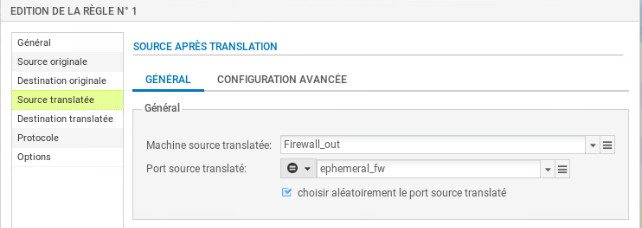
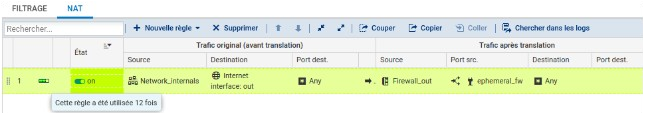
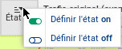
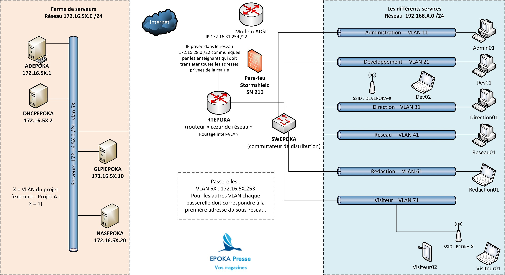

Activités Professionnelles¶
Situation professionnelle¶
Introduction – Infrastructure et services réseaux SP0¶
 ¶
¶
Méthode de gestion du projet informatique¶
Le travail en équipe rend inévitable l’utilisation d’un outil collaboratif (ex : ELEA dans Netocentre, cours :
« AP-SIO2-SISR-2025 »).
Vous devez rendre dès la première séance :
- La liste des tâches intermédiaires pour chaque mission (exemple : prototypage de l’architecture réseau).
Une tâche intermédiaire correspond à un élément livrable de la mission.
- La répartition des tâches entre les membres de l’équipe.
- Les dates prévisionnelles de livraison de chaque mission.
Pour cela, vous utiliserez l’application en ligne Notion.
Nombre d’étudiants : 2
Date de livraison de l’ensemble de la situation : 29/09/2025
Présentation de la situation¶
La société EPOKA Presse dispose d’un réseau accueillant l’ensemble de ses services.
Chaque poste dispose d’une adresse IP fixe attribuée par l’administrateur réseau selon un plan d’adressage (Document 2).
Problèmes constatés :¶
- Ralentissements fréquents du trafic réseau.
- Installation récente d’une ferme de serveurs NUTANIX (hyperviseur AHV) par la société Bull.
- Les serveurs virtuels hébergés doivent être adressés dans la plage 172.16.5X.0 /24
(X = 1 pour le VLAN 51, X = 2 pour le VLAN 52, etc.).
Missions à réaliser¶
Mission 1 – Adapter le plan d’adressage aux nouveaux besoins¶
La société souhaite segmenter son réseau 192.168.X.0 /24 à l’aide de la méthode VLSM (Variable Length Subnet Mask).
Le réseau serveurs reste inchangé.
Vous disposez du nombre d’hôtes par service dans l’annexe 2 et devez ajouter 20 % de marge d’adresses par sous-réseau.
👉 Objectif : proposer un nouveau plan d’adressage pour l’ensemble des services (à faire valider par un enseignant).
Mission 2 – Mise en place d’un contrôleur de domaine et d’un service DHCP¶
Contexte :¶
Une ferme de serveurs sous NUTANIX (AHV) a été installée.
Vous devez configurer deux serveurs virtuels respectant le plan d’adressage.
1. Serveur ADEPOKA¶
- Nom : ADEPOKA
- IP : 172.16.5X.1
- OS : Windows Server 2019
- Services : DNS dynamique, Active Directory
- Domaine : local.epokaX.lan
- Peupler l’AD via un script PowerShell et un fichier CSV fourni sur Moodle.
Ajouter les commentaires expliquant les structures de programmation utilisées.
2. Serveur DHCPEPOKA¶
- Nom : DHCPEPOKA
- IP : 172.16.5X.2
- OS : Debian
- Service : DHCP (tous les sous-réseaux en adressage dynamique, sauf le réseau serveurs).
- Distribuer les paramétrages réseau à tous les sous-réseaux.
Mission 3 – Mise en place d’un serveur de gestion d’incidents et d’un serveur NAS¶
Serveur de gestion d’incidents (GLPI)¶
- Nom : GLPIEPOKA
- IP : 172.16.5X.40
- OS : à déterminer et justifier
- Service : gestion d’inventaire et de tickets d’incident
- Responsables :
- Olivier TONDET : solutions techniques et interconnexions
- Pamela TREMO : services et systèmes serveurs
Serveur NAS¶
- Nom : NASSCA
- IP : 172.16.5X.20
- OS : à déterminer
- Service : gestion des sauvegardes
- Configuration :
- RAID 5
- Minimum 20 Go disponibles
- Accès via authentification Active Directory
Mission 4 – Mise en place d’une partie de l’architecture réseau¶
Sur la base des documents 2 et 3, configurer :
- un commutateur d’accès (segmentation + plan d’adressage)
- un routeur (routage inter-VLAN)
- un pare-feu Stormshield SN210 (sécurité réseau)
Utiliser Packet Tracer pour modéliser et tester la maquette.
Les tests doivent vérifier le routage et la distribution DHCP sur tous les services.
Contraintes matérielles et technologiques¶
- Ferme de serveurs NUTANIX (AHV)
- Licence Windows Server 2019 (Active Directory + DNS)
- Linux Debian pour les services utilisateurs et DHCP
- Routeur Cisco 1921
- Pare-feu Stormshield SN210
- Commutateur Cisco 2960
- Borne Wi-Fi D-Link
- Ordinateur portable
- Traduction NAT/PAT par le routeur cœur de réseau avec une adresse IP privée fournie par le professeur
Document 1 – Définition et mise en place du PAT¶
Source : WayToLearnX
Définition¶
Les protocoles NAT (Network Address Translation) et PAT (Port Address Translation) permettent à des hôtes privés d’accéder à Internet via une adresse publique routable.
Le PAT associe plusieurs adresses locales à une seule adresse IP publique en ajoutant un numéro de port unique pour chaque connexion.
Nombre maximal de traductions NAT : 65 536 (port sur 16 bits). 
Pare-feu Stormshield – Configuration du NAT dynamique¶
Les règles de filtrage et NAT sont regroupées dans une politique unique (10 maximum, une seule active).
La règle NAPT (masquerading) permet aux machines internes d’accéder à Internet via la traduction des ports.
Procédure : 1. Créer une nouvelle règle → règle de partage d’adresse source (masquerading) 
- Définir :
- Source : Network_internals
- Destination : Internet


-
Interface de sortie : out 
-
Source translatée : Firewall_Out 
-
Port source translaté : ephemeral_fw (choix aléatoire conseillé) 
-
Activer la politique

Document 2 – Nombre d’hôtes dans le parc EPOKA Presse¶
| VLAN | Service | Nombre d’hôtes (hors passerelles) |
|---|---|---|
| 11 | Administration (RH / Compta / Juridique / Secrétariat) | 45 |
| 21 | Développement | 20 |
| 31 | Direction | 12 |
| 41 | Réseau | 8 |
| 61 | Rédaction | 50 |
| 71 | Visiteurs | 25 |
| 5X | Serveurs (X=1 VLAN 51, X=2 VLAN 52, etc.) | — |
Document 3 – Extrait de l’architecture réseau attendue¶
